Início/Conceitos/1 · Contrato POSIX e o exit 2
conceito 1 · sistema operacionalContrato POSIX e o exit 2
O número 2 que o Nemesis devolve quando bloqueia não saiu do nada: ele é produto direto do modelo de processos POSIX. Eu escolhi esse número porque ele virou um contrato que as IDEs entendem sem ambiguidade.
Todo processo Unix termina devolvendo um inteiro ao pai: o exit code. Zero é sucesso, diferente de zero é falha. As IDEs de agente combinaram que, no hook que roda antes da ação, sair com exit 2 significa "bloqueie esta ação". Então eu leio o pedido do agente pela entrada padrão (stdin), decido, e quando é hostil eu chamo exit(2). É determinístico: não é um pedido, é o fim do processo com um veredito.

Do zero: de onde vem o exit code
No modelo POSIX, um processo é criado por fork/exec e, quando morre, entrega ao processo pai um status via wait. Desse status o pai lê um byte: o código de saída. A convenção é antiga e universal: 0 quer dizer "deu certo", qualquer valor de 1 a 255 quer dizer "deu errado", e cada programa pode atribuir significados aos códigos diferentes de zero. O agente conversa com o hook por três descritores padrão: entrada (stdin), saída (stdout) e erro (stderr). O hook recebe o pedido em stdin como JSON, processa, e o que importa para a decisão não é o que ele imprime, e sim com qual número ele termina.
Por que importa
Eu precisava de um sinal que o agente não pudesse "convencer" a mudar. Texto no prompt é probabilístico: o modelo pode ignorar. Já o código de saída de um processo é um fato do sistema operacional. Quando a IDE combina "se o hook pré-ação sair com 2, eu cancelo a ação", o controle deixa de depender da boa vontade do modelo e passa a depender do kernel entregar o status do processo, o que ele sempre faz.
Como se correlaciona
Esse contrato amarra tudo o que vem depois. O pretool é o processo que lê o stdin e decide; o desenho fail-closed garante que até um erro interno termine em exit 2 em vez de deixar passar; e a camada de kernel usa o análogo no nível do kernel, devolver -EPERM em vez de 0, para negar exec. O exit code é a forma userspace do mesmo princípio: comunicar "negado" por um canal que não se discute.
Como o Nemesis aplica
O ponto de bloqueio é uma função única que registra o motivo no ledger e encerra o processo com 2. Só registra na telemetria quando o motivo é de segurança (o vocabulário das mensagens NEMESIS), porque erro operacional do hook não é proteção.
if reason.contains("NEMESIS ") {
nemesis_defender::violations_log::append("pretool", reason);
}
std::process::exit(2);E onde eu crio um processo filho, uso a API POSIX com os três descritores explicitamente desligados, exatamente o modelo de fork/exec mais redirecionamento de stdio:
std::process::Command::new(&exe)
.arg("--daemon")
.current_dir(&project_root)
.stdin(std::process::Stdio::null())
.stdout(std::process::Stdio::null())
.stderr(std::process::Stdio::null())
.spawn()Nuances e armadilhas
- O significado de "2 = bloqueado" é uma convenção das IDEs de agente, não uma lei do POSIX. O POSIX só garante "0 = ok, ≠0 = erro". Eu dependo de a IDE honrar o 2 como cancelamento; por isso valido isso no pentest com o hook conectado.
- O que o hook imprime em stdout/stderr é diagnóstico para o humano; a decisão é só o código de saída. Misturar os dois é erro comum.
- Um processo que trava (não termina) não devolve código nenhum. Por isso o hook é síncrono e rápido, e tem o desenho fail-closed para nunca ficar pendurado sem veredito.
Auto-checagem
Por que o código de saída é mais confiável que uma instrução no prompt?
Porque é um fato do sistema operacional, entregue pelo kernel ao processo pai, e não uma sugestão que o modelo pode ignorar. O agente não tem como "argumentar" contra o término de um processo com status 2.
Por onde o hook recebe o pedido do agente?
Pela entrada padrão (stdin), como JSON. Ele lê, decide, e comunica o veredito pelo código de saída, não pelo texto impresso.
O "2" é exigido pelo POSIX?
Não. POSIX só fixa 0 = sucesso e ≠0 = falha. O 2 como "bloqueado" é a convenção combinada com as IDEs de agente; é por isso que eu o trato como contrato e o valido na prática.
Para ir além
Citações verificadas contra o repositório. Voltar ao índice.